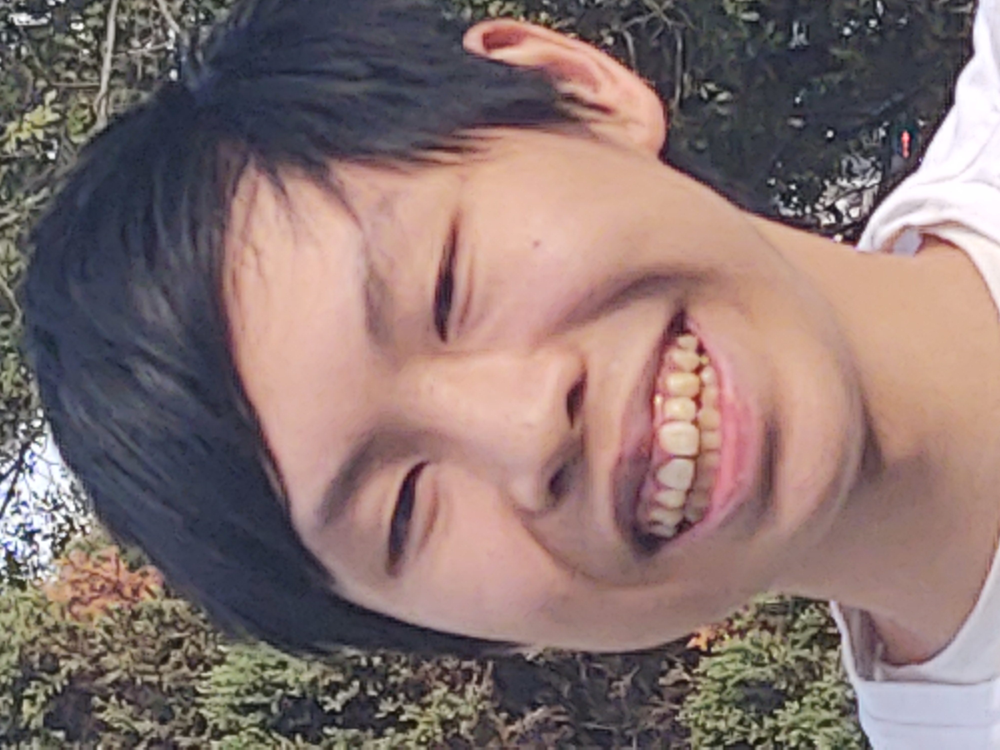

My name is Philip. I am a male who is currently 18 years old. I was born in Australia but my parents are from Hong Kong. I have an older brother and a younger sister who are also studying university online.
I was born in Churchill, Gippsland, which is in the more rural parts of Victoria. While I don’t have many memories of the place, it was a small town that had a lot of open fields and cows. I attended Hazelwood North Primary school up to Grade 1, after which I was homeschooled. We moved to Wantirna South in Melbourne when I was 7.
Me and my sister would go biking around the suburb a lot. It was enclosed and only had one entrance that led to an open road so we usually rode up to the dead end in the road and back. Sometimes our dad would accompany us to ride to the park.
There was a period in time where we would travel to Jakarta, Indonesia, stay for a month or two and then come back to Australia, and then repeat a month later. This was because our dad had a job there. I didn’t like it that much since the constant back and forth made it hard for me to form lasting relationships.
It was always humid when you went outside and the air smelled like sewage most of the time. There was so much air pollution that you couldn’t see the sky clearly at night, and if you stayed up long enough, you could hear the early morning muslim prayers. Also, the toilets sucked; I also lost count of how many times I couldn’t flush the toilet because my poop was too large.
Despite all the complaints, there were some good things about it too. The hotel we were staying at had a pretty big pool, and we would go once every few days. There was also free breakfast, though the quality of the food could vary. The arcades and movies were very cheap, and I got to see Weathering With You in cinemas when it came out. I enjoyed that movie a lot.
At the end of 2019 we moved again to where I currently live, which is actually not too far from our previous house. It has a nice front yard and is close to a walking trail, so me and my sister have started biking around the neighborhood again. It’s also a 15 minute drive from The Glen shopping center, so on free days we like to go there for a meal and an afternoon in the bookstore. We basically spent the pandemic here, and it’s quite cozy. There is probably a chance that we’ll move again, but for right now, I’m pretty happy with where I live.
